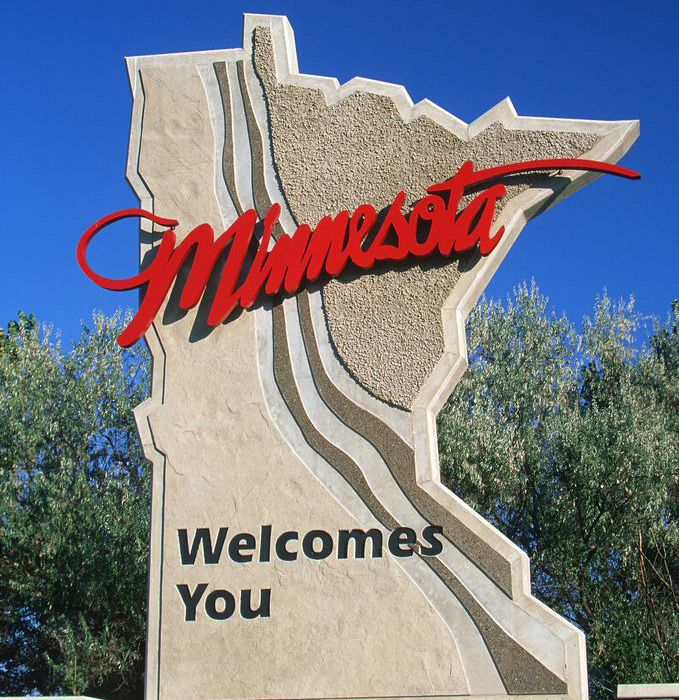
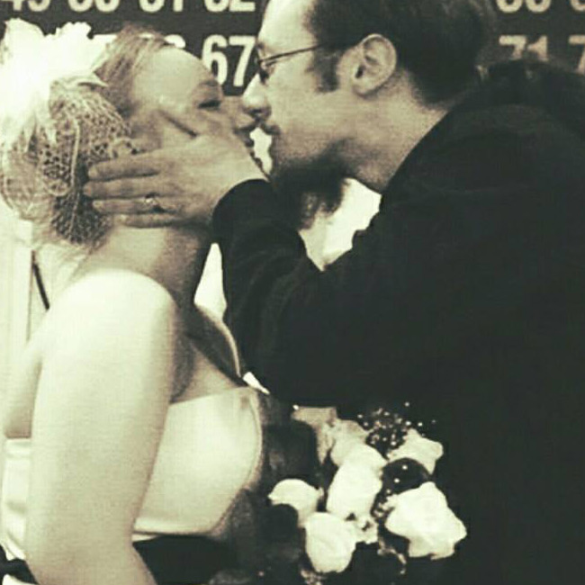
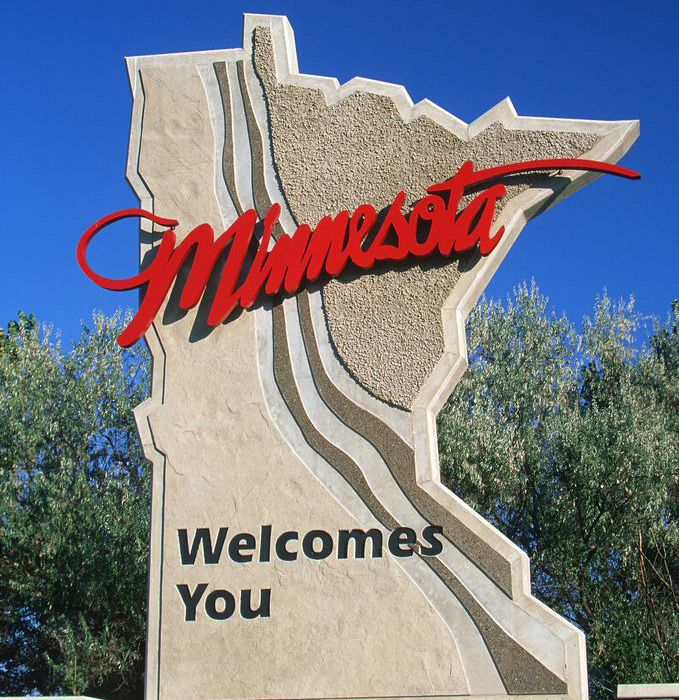
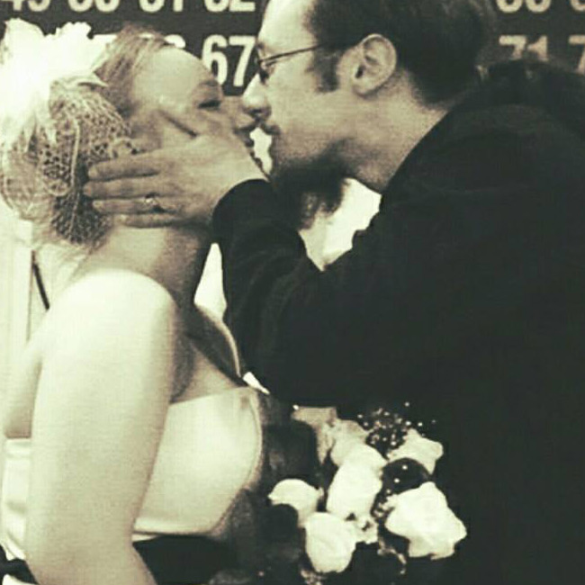

FUN FACTS
- I have a knack for the little detials and strive for perfection.
- I have a two year old.
- I grew up in the small town of Saint Peter, MN.
- I'm slightly obsessed with Doctor Who.
- I am an avid coffee drinker.
 



Hello There!
I am a designer following my passion. My main focus is web design, user interface design and graphic design. I specialize in creating beautiful, usable, professional websites using the current web standard guidelines that result in semantic and seo friendly XHTML and CSS.
I believe that great design comes down to the details. I also believe that design must support functionality, and vice versa. There should never be a time where functionality is compromised to the design aspects.
Mission: Build Sites. Build Business.